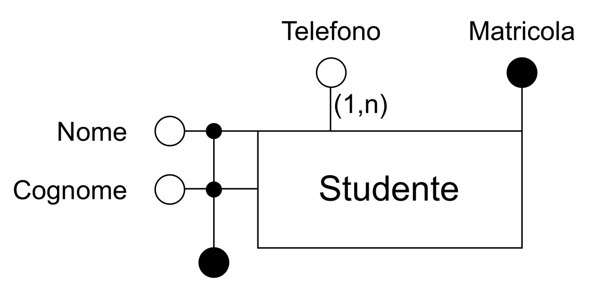
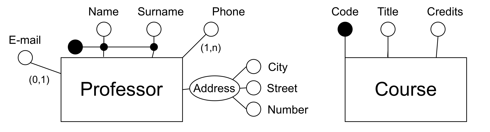
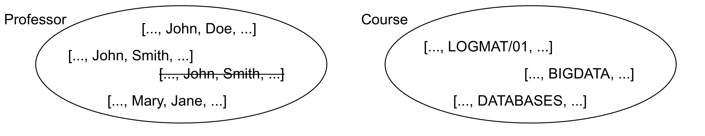
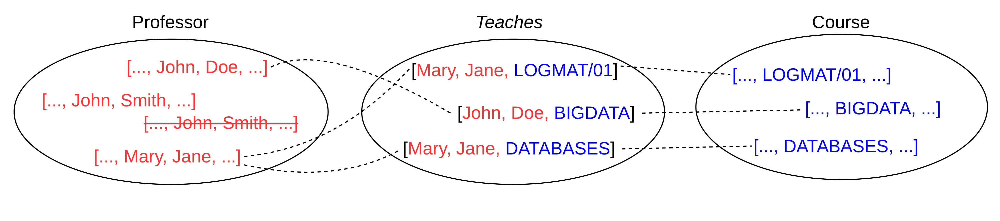
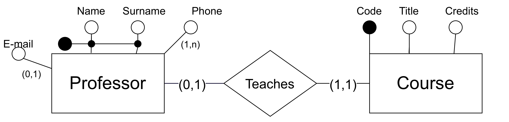
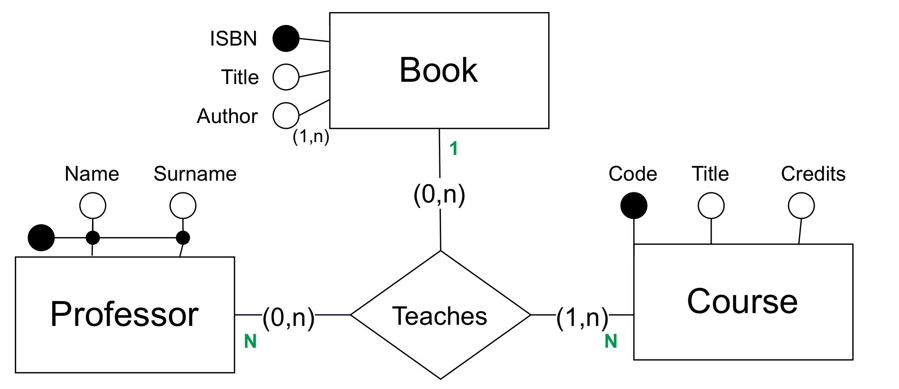
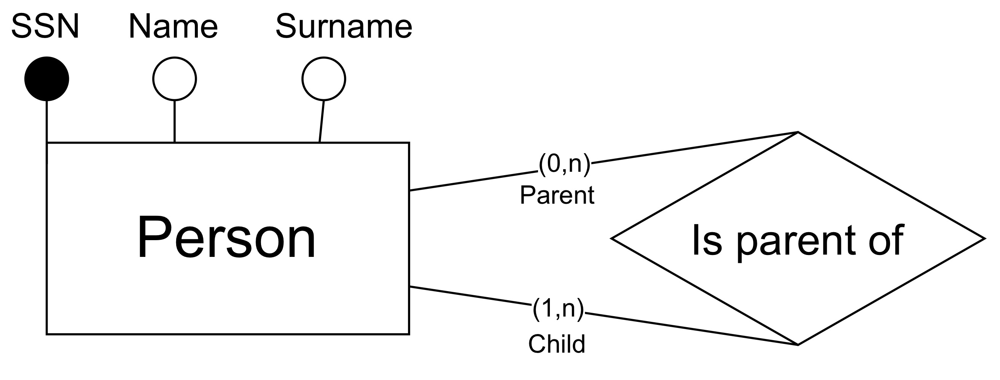
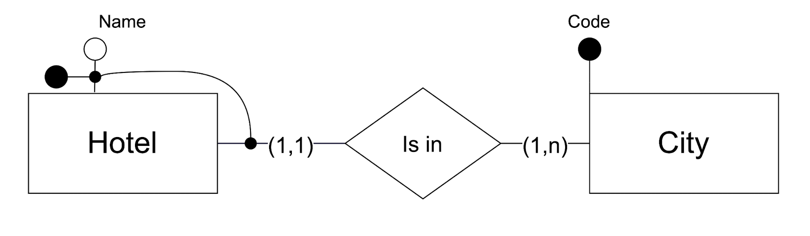

graph LR
A("programma 1: esami studenti") --- B["archivio 1: dati studenti e esami"]
C("programma 2: tasse studenti") --- D["archivio 2: dati studenti e tasse"]
Basi di dati
informatica
Appunti di basi di dati del 3 anno di informatica
Introduzione
L’informazione è rappresentata attraverso una forma minimale: il dato
- dato
- collezione di materiali grezzi e disorganizzati riguardo un fenomeno
- informazione
- si ottiene processando e interpretando i dati, organizzandoli in strutture e stabilendo collegamenti tra loro
- conoscenza
- combinazione di informazione, intuizione e esperienza
I sistemi informativi sono fondamentali per supportare le decisioni aziendali e le organizzazioni. I dati sono spesso risorse strategiche perché sono molto stabili nel tempo rispetto a altre componenti (processi, tecnologie, umani)
Database
- collezione organizzata di dati per supportare attività di un’entità
- collezione di dati gestita da un DBMS
DBMSs: Database Management Systems
I DBMS sono un sistema sosftware che comprende:
- database: collezione di dati interrelati
- una serie di programmi per la gestione dei dati:
- strutture definite per la conservazione
- meccanismi per recuperare e modificare i dati
- gestione dei conflitti e della sicurezza
File System to stare data
Volendo possiamo usare il file system per salvare i dati, ad esempio in un file csv
Name,Birthdate,Birthplace,Sex
Chris Pratt,6/21/79,Virginia,M
Chris Hemsworth,8/11/83,Melbourne,M
Ellen Barkin,2/16/64,Ohio,F
Emily Blunt,2/23/87,London,FTuttavia ci sono diversi svantaggi:
- ridondanza: i dati sono duplicati in più file per ogni dipartimento. Spreco di memoria e rischio inconsistenze
- accesso inefficiente: ogni nuova richiesta richiede un programma specifico (estrarre un tipo di dato nuovo rispetto altri)
- isolamento dei dati: file diversi e formati rendono difficile l’integrazione
- sicurezza: difficile permettere accesso parziale ai dati
- gestione vincoli: spesso i vincoli e i filtri sono nascosti nel codice dei programmi, difficile crearne di altri, difficile assicurarsi l’integrità
- aggiornamenti atomici: failure possono rendere i file inconsistenti
- accesso concorrente rischio di accesso concorrente di più utenti e conseguente inconsistenza
DBMS per salvare i dati
Una soluzione a questi problemi è l’uso di un DBMS
Ottimo nei casi in cui:
- grandi quantità di dati: non possono essere caricati in memoria principale
- dati globali e condivisi: database utilizzato per molteplici scopi da molteplici utenti
- dati persistenti: il database esiste indipendentemente da utente e programmi
graph LR
A("programma 1: esami studenti") --- C["Database studenti"]
B("programma 2: tasse studenti") --- C["Database studenti"]
I principali vantaggi
- no ridondanza
- assenza inconsistenza
- privacy
- efficienza
La gestione della complessità DBMS sfrutta l’astrazione: significa organizzare i DBMS in livelli
Layer nei DBMS
livello fisico: come vengono salvati i dati su disco
livello logico: quali dati sono salvati e come sono rappresentati e relazionati
livello esterno/di vista: gestisce presentazione delle informazioni e dei programmi, può nascondere parte delle informazioni
physical data independence: posso modificare il livello fisico senza modificare il livello logico
logical data independence: tramite views posso modificare il livello logico senza modificare il livello esterno e viceversa
graph TD
A[Livello esterno] --- B[Livello logico]
B --- C[Livello fisico]
A --- D
B --- E
C --- F
Data models
Lo schema logico è descritto da un piccolo numero di strutture provviste da modelli di dati
Un data model descrive:
- i dati e la loro struttura
- relazione tra i dati
- vincoli
Ne esistono diversi modelli: relazionale, grafo, object-based, semistructured (XML), gerarchico
- modello gerarchico: organizzato ad albero
- modello a grafo: con nodi e archi
- modello relazionale: organizzato in tabelle
Relational model
I dati sono logicamente organizzati in relazioni, visualizzabili come tabelle.
Le tabelle rappresentano:
- schema
- istanza
è un modello record-based:
- le righe hanno un formato e lunghezza fissati
- ogni riga rappresenta un record
- ogni colonna un attributo
Ogni tabella ha una chiave primaria che serve a identificare unicamente ogni riga
è una rappresentazione logica, non determina come i dati sono fisicamente salvati
| ID | name | dept_name | salary |
|---|---|---|---|
| 2222 | Einstein | Physics | 97000 |
| 1231 | Wu | Finance | 8999 |
| 1305 | Mozart | Music | 34000 |
Le relazione tra record può essere rappresentata con valori corrispondenti in tabelle diverse (JOIN)
Un vincolo a una chiave esterna (o riferita) può garantire che il valore esista effettivamente
le relazioni sono espresse a livello logico, fisicamente non sono necessari dei puntatori
Differenti rappresentazioni
Si possono usare differenti modelli per rappresentare i dati (es. grafo vs relazionale) → vedi slide
- logical data models
- sono astratti, non impongono vincoli fisici ma impongono vincoli sull’organizzazione dei dati
- conceptual data models
- ancora più astratti, descrivono i dati indipendentemente dal modello logico, utili nella fase di progettazione del database
SQL - Structured Query Language
Uno dei vantaggi principali dei database relazionali è il loro supporto a SQL (Structured Query Language)
SQL è un linguaggio dichiarativo diviso in due parti:
- DDL (Data Definition Language): specifica lo schema del database
- DML (Data Manipulation Language): recupera e aggiorna il contenuto tramite query
Possiede una sintassi standardizzata
SELECT name
FROM instructor
WHERE salary > 97000Persone e DBMS
database administrator (DBA)
:gestisce il database, ne garantisce la sicurezza e l’integrità, gestisce backup e recovery
- naive user
- usa il database tramite API semplificate
- external developer
- comunica mediante linguaggio di programmazione e librerie
- advanced user
- accede al database e al DBMS direttamente con DML
Database system internals
Un database contiene:
- i dati stessi
- indici: strutture per velocizzare e migliorare l’accesso ai dati
- data dictionary: metadati che definiscono le strutture dei database
- statistical data: informazioni sulla quantità di dati, la loro distribuzione
Un DBMS implementa una serie di sottomoduli che gestiscono un aspetto specifico
- storage manager
- query processor
Lo storage manager è il modulo software che provvede all’interfaccia tra il basso livello del database e le applicazioni/query
- interagisce con file system, si occupa del salvataggio e del recupero dei dati, traduce comandi DML in comandi di basso livello file-system
è composto da:
- Authorization and integrity manager (e.g., user privileges and physical integrity)
- Transaction manager (ensures that the ACID properties are satisfied), assicurando che il databse rimanga consistente
- Buffer manager (manages the main-memory area reserved for the DBMS)
- File manager (allocates space in primary and secondary memory and manages the data structures used to represent information)
Il query processor si occupa del query processing i cui step principali sono:
1. Parsing and translation
2. Optimization
3. Evaluation
Una query può essere eseguita in modi diversi (scan delle tabella, uso di un indice)
Database design
L’architettura di un database dipende molto dal computer system sottostante: centralizzato, client-server, parallelo, distribuito
Il processo di design viene distinto in due fasi, cosa viene rappresentato e successivamente come
- conceptual design
- logical design
- physical design
conceptual design: identificare e descrivere il dominio che il database modella, con tutti i requisiti.
databse design: schema concettuale trasformato in uno schema logico basato su un modello logico, applicando regole, strutture, usando tecniche formali (es. normalization) per assicurarsi della buon bontà dello schema, scegliendo la specifica tecnologia DBMS
physical design: creazione dello schema fisico e dettagli basso livello (definizione indice, altre cose)
Entry-relationship model
Concetti preliminari
- insiemi (set) senza ripetizioni e ordine
- multinsiemi (multiset) con ripetizioni e senza ordine
- insieme delle parti (power set): insieme che include tutti i sottoinsiemi
- prodotto cartesiano
Nella prima fase di progettazione concettuale, il modello più usato è l’Entity-Relationship model (E-R)
Il modello entità-relazione descrive un dominio tramite:
- insiemi di entità
- insiemi di relazioni tra entità
- attributi
Ci sono diversi modi per rappresentarli, seguiremo la notazione di:
Database Systems - Concepts, Languages and Architectures by P. Atzeni, S. Ceri, S. Paraboschi, and R. Torlone
Insiemi di entità (Entity sets)
- entità
- oggetto che esiste nel dominio considerato ed è distinguibile da altri oggetti. Esiste indipendentemente dalle proprietà che gli associamo
- entity set
- insieme di entità dello stesso tipo con le stesse proprietà
- attributi
- proprietà condivise da tutti i membri di un entity set
Ogni attributo assume i valori dal dominio
Un sottoinsieme di attributi formano una chiave di un insieme di entità se i valori degli attributi identificano univocamente ogni entità
- conoscere questi valori identifica un’identità
- due entità diverse non possono avere gli stessi valori per tutti gli attributi della chiave
Insiemi di entità
Esempio entità Professore con i seguenti attributi
- nome e cognome, che insieme formano la chiave
- email opzionale
- cellulare, molti valori
- indirizzo, attributo composto formato da
- città
- via
- civico

- cerchio nero: chiave
- cerchio bianco: attributo
- rettangolo: entità
- parentesi nei lati: cardinalità relazione
Possibilità di più chiavi

Per un’entità posso avere due chiavi che permettono l’identitificazione univoca, es: nome + cognome oppure numero matricola. In ogni caso posso scegliere una chiave primaria, che sarà quella usata per identificare l’entità
attributi possono essere composti
proprietà insiemi di entità:
- un insieme non può contenere due entità con gli stessi attributi chiave
- ogni set ha una chiave banale che consiste in tutti gli attributi
- un set può avere più chiavi
Esempi


Insiemi di relazioni
- relazione
- associazione tra più entità
- insieme di relazioni (relationship set)
- R \subseteq E_1 \times E_2 \times ... \times E_n è un insieme di relazioni tra n \geq 2 entità (e_i), ognuna disegnata dal corrispondente insieme entità E_i

In questo caso abbiamo 3 relazioni (linee tratteggiate) che assumiamo appartenere all’insieme relazioni Teaches
- Professor: insieme entità
- Course: insieme entità
- Teaches: insieme relazioni
In cui in abbiamo le relazioni:
- (John Doe, BIGDATA)
- (Mary Jane, LOGMAT/01)
- (Mary Jane, DATABASES)
La relazione pertanto è una dupla (elemento insieme entità 1, elemento insieme entità 2)
Relazioni e attributi
Le relazioni possono avere attributi propri (per esempio per tracciare quando un professore inizia un corso)
- (John Doe, BIGDATA, 2023-01-01)
La relazione in ogni caso rimane definita dall’associazione tra entità, gli attributi sono solo informazioni aggiuntive
(immagine slide 19 - 2)
Cardinalità delle relazioni
In generale per una relazione binaria tra due insiemi, possiamo identificare le seguenti cardinalità:
- 1:1: un’entità di un insieme è associata al massimo a un’entità dell’altro insieme e viceversa
- 1:N: un’entità di un insieme può essere associata a più entità dell’altro insieme, ma ogni entità dell’altro insieme è associata al massimo a un’entità del primo insieme
- N:1: un’entità di un insieme può essere associata al massimo a un’entità dell’altro insieme, ma ogni entità dell’altro insieme può essere associata a più entità del primo insieme
- N:M: un’entità di un insieme può essere associata a più entità dell’altro insieme e viceversa
Un insieme di entità può avere partecipazione totale o parziale in un insieme di relazioni.
1:1
(immagine slide 21 - 2)
1:N
N:1
N:M
Notazione grafica degli insiemi di relazioni

Nelle parentesi abbiamo i vincoli di cardinalità
(min, max) indica il numero minimo e massimo di entità che possono partecipare alla relazione
le relazioni (indicate con un rombo) possono anche avere attributi propri, con la classica notazione a cerchio
relazioni tra più insiemi di entità (>2)

notazione verde: elimina ambiguità
- data una coppia (professor, course): 1 libro
- data una coppia (professor, book): N corsi
- data una coppia (course, book): N professori
(altro esempio slide)
Relazioni ricorsive e ruoli
Relazione ricorsiva: relazione tra entità dello stesso insieme R \subseteq E_1 \times E_1
esempio: relazione è genitore di tra entità Persona

se la relazione non è simmetrica, ogni ricorrenza può essere distinta da un ruolo
Attributi derivati
un attributo derivato è un attributo il cui valore può essere calcolato a partire da altri attributi
(es: numero di corsi insegnati da un professore, calcolabile contando le relazioni Teaches in cui il professore partecipa)
Non vanno inseriti manualmente, ma una routine di update si occupa di mantenere i valori consistenti
Notazione grafica: cerchio tratteggiato
buona norma inserire nel diagramma ER delle note in cui si specifica come calcolare l’attributo derivato
Insiemi di entità deboli
L’esistenza di un’entità debole dipende dall’esistenza di un’entità forte, che la identifica univocamente
L’entità debole non ha una chiave propria, ma la identifichiamo mediante l’entità forte a cui è associata e una chiave parziale
Ogni weak identity set ha un corresponding identifying entity set
L’identifying set possiede l’insieme di entità deboli che identifica, e la relazione tra i due insiemi è detta identifying relationship
entità debole: entità forte associata + chiave parziale
- il weak identity set ha partecipazione totale nella identifying relationship, con una cardinalità di 1
- l’identifying entity set può avere partecipazione parziale, la sua cardinalità può tipica è N
- eventuali attributi coinvolti nelle chiavi parziale devono avere cardinalità (1,1)
- catene di insiemi di entità deboli sono ammessi, dipendenza da più insiemi di entità forti è ammessa e più insiemi di chiavi parziali (vanno evitati cicli)
Notazione grafica: pallino nero che da chiave parziale tocca l’arco della relazione identificante

Esempio:
\begin{rcases} \text{ogni hotel è caratterizzato da un nome} \\ \text{hotel in città diverse possono avere lo stesso nome} \end{rcases} \Rightarrow \text{hotel: città + nome}
Esempio catena:

dipendenza da più identifying entity set:

Reificazione
reificazione: processo con cui un’associazione/relazione o un attributo complesso viene trasformato in una nuova entità autonoma
esempio:
diventa:

Specializzazione
Insiemi di entità diversi possono condividere attributi o partecipare in relazioni simili
gestita tramite specializzazione, creando un insieme genitore e degli insiemi figlio, che ereditano attributi e partecipazioni dell’insieme padre
la specializzazione può essere:
- Totale/parziale
- totale: ogni entità dell’insieme padre appartiene a uno degli insiemi figlio
- parziale: entità padre non corrisponde a nessuna entità figlio
- Disgiunta/sovrapposta
- disgiunta: entità padre può appartenere soltanto a una entità figlio
- sovrapposta: entità padre può appartenere a più entità figlio
Bisogna sempre specificare il tipo di specializzazione
La specializzazione può avere anche un figlio unico
Un insieme di entità può essere sia genitore che figlio all’interno di una gerarchia di specializzazione
Ereditarietà multipla
Un insieme di entità può appartenere a diverse gerarchie di specializzazione, creando un reticolo di ereditarietà multipla
le istanze di sottoclassi condivise formando un sottoinsieme di istanze di ogni insieme genitore, ovvero formano un sottoinsieme dell’intersezione degli insiemi genitori.
Una sottoclasse condivida eredita attributi e partecipazioni di tutti i genitori, e può avere attributi e partecipazioni proprie
Union type (o categoria)
categoria: relazione di specializzazione di un figlio con molteplici genitori, che rappresentano diversi tipi di entità
Un insieme di entità può essere l’unione di più insiemi di entità, creando un union type (o categoria)
La categoria è un sottoinsieme dell’unione degli insiemi genitori
esempio:

Abbiamo due categorie:
- owner
- registered vehicle
Sottoclassi condivise vs categorie
sottoclassi:
- sottoinsieme delle intersezioni degli insiemi genitori
- ereditarietà multipla da tutti i genitori
categorie:
- sottoinsieme dell’unione degli insiemi genitori
- con genitori disgiunti, ogni istanza appartiene a uno degli insiemi genitori
- ereditarietà selettiva, attributi dai genitori a cui appartengono
I genitori di una categoria possono avere chiavi primarie diverse o uguali
Insieme di entità genitore vs categoria
insieme genitore:
- include tutti i figli
- se specializzazione parziale, può includere anche altri tipi
categoria:
- non include tutti le istanze delle entità genitori
- se genitori disgiunti, ogni istanza appartiene a un genitore
- eredità selettiva
Categorie totali e parziali
- categoria totale: contiene l’intera unione dei genitori (tutti gli elementi dei genitori)
- categoria parziale: contiene solo un sottoinsieme dell’unione dei genitori
nota: ogni categoria totale può essere rappresentata come un insieme genitore di una specializzazione, a condizione che una chiave comune esista
Design pattern
I design pattern sono modi convenzionali per rappresentare situazioni ricorrenti
Istanza di un costrutto (libro - copia)
Generalmente per relazioni 1:N
Importante non usare entità deboli che hanno esistono indipendentemente dall’entità forte (è parte di)
esempio:
- libro (opera): ISBN, titolo, genere, anno
- copia (copia fisica): prezzo, scaffale, ripiano
Relazioni multiple tra entità (studente - appelli)
esempio:
- studente: nome, cognome
- appello: esito, data
- corso: codice
flowchart
Gestire storia/cronologia
dominio:
- un cliente può comparire una volta cone cliente corrente
- un cliente può comparire più volte come cliente storico
(…)
Documentazione
serve a completare il diagramma E-R mediante
Business rules
servono a descrivere proprietà come:
- descrizione di concetti
- vincoli per l’integrità/consistenza/validità
- concetti derivati (tramite inferenza, aritmetica)
asserzioni: dichiarazioni atomiche
concept must/must not expression involving the concept
regole di derivazione:
concept is obtained by operation on the concepts
vanno implementati nel database
Analisi dei requisiti
- livello adeguato di astrazione
- standardizzazione della struttura delle frasi
- evitare frasi complesse
- identificare sinonimi e omonimi, standardizzare i termini
- esplicitare i riferimenti incrociati
- costruire un glossario dei termini
Glossario dei termini
| Term | Description | Synonym | Links |
|---|---|---|---|
| Trainee | Partecipant in a course | partecipant | Course, Employer |
| Instructor | Course tutor | Tutor | Course |
| Course | |||
| Employer |
Riscrittura e strutturazione dei requisiti
Requisiti operazionali
Criteri generali per la rappresentazione dei dati
concetto con molte proprietà oppure che descrive classi di oggetti autonomi → entità
concetto con struttura semplice e senza proprietà rilevanti → attributo per un altro concetto a cui si riferisce
concetto fornisce un collegamento tra più entità → relazione
concetti che sono casi particolari di altri → generalizzazione
Top-down design
flowchart TD
A[Specification] --> B[Schema iniziale]
B --> C[Schema raffinato]
C --> D[Schema finale]
schema concettuale realizzato per mezzo di una serie di perfezionamenti detti trasformazioni primitive di tipo top-down
- entità singola → due entità correlate
- entità singola → generalizzazione
- singola relazione → relazioni multiple
- singola relazione → entità con relazioni
- singola relazione → aggiunta attributi
Bottom-up design
flowchart TD
A[Specifiche] --> B[Componente]
A --> C[Componente]
B --> D[Componente]
B --> E[Componente]
C --> F[Componente]
C --> G[Componente]
D --> H[Schema]
E --> I[Schema]
F --> L[Schema]
G --> M[Schema]
H --> N[Integrazione degli schemi]
I --> N[Integrazione degli schemi]
L --> N[Integrazione degli schemi]
M --> N[Integrazione degli schemi]
N --> O[Schema concettuale finale]
Le specifiche iniziali vengono scomposte in componenti sempre più piccole, finché ogni componente descrive un elemento atomico del dominio
ogni componente descritto da uno schema concettuale, che viene poi combinato con gli altri per formare lo schema concettuale finale
Le operazioni elementari sono le trasformazioni primitive di tipo bottom-up:
- concetto → generazione di un’entità
- due entità → generazione di una relazione
- entità → generalizzazione
- aggregazione di attributi in un’entità
- aggregazione di attributi in una relazione
Inside-out design
Simile alla bottom-up
Si scelgono alcuni concetti fondamentali e poi li si estende man mano passando per concetti correlati, estendoli radialmente
Mixed design
Si decompongono i requisiti in componenti ma non al punto di separarli completamente
Si definisce così uno scheletro di uno schema concettuale che offre una visione d’insieme del dominio.
Ogni parte dello scheletro viene poi raffinata con le trasformazioni primitive di tipo top-down, bottom-up o inside-out
Qualità di uno schema concettuale
- correttezza: lo schema usa in maniera appropriata i costrutti del modello concettuale
- errori sintattici: uso di costrutti non permessi dal modello concettuale (specializzazione su insiemi di relazioni e non entità)
- errori semantici: uso di costrutti che non rispettano la definizione
- completezza: lo schema rappresenta tutti i dati di interesse (ogni requisito dei dati è rappresentato da un concetto)
-leggibilità - essenzialità: assenza di concetti ridondanti non voluti
Metodo per la progettazione concettuale
- Analisi dei requisiti
- costruzione di un glossario dei termini
- analisi dei requisiti ed eliminazioni ambiguità
- organizzare i requisiti in gruppi
- Step base
- identificazioni concetti più rilevanti (scheletro dello schema concettuale)
- Scomposizione (se necessario)
- scomporre i i requisiti riferendosi ai concetti principali
- Iterazione
- rifinire i concetti dello schema in base ai requisiti
- aggiungere eventuali concetti mancanti
- Integrazione (solo con scomposizione)
- integrare i vari sottoschemi
- Analisi qualitativa
- verificare correttezza, completezza, leggibilità e essenzialità dello schema concettuale
Esistono dei CASE tools per supportare la progettazione.